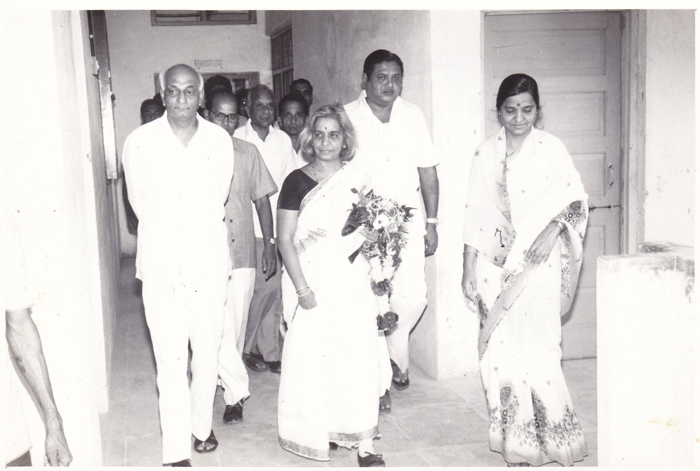
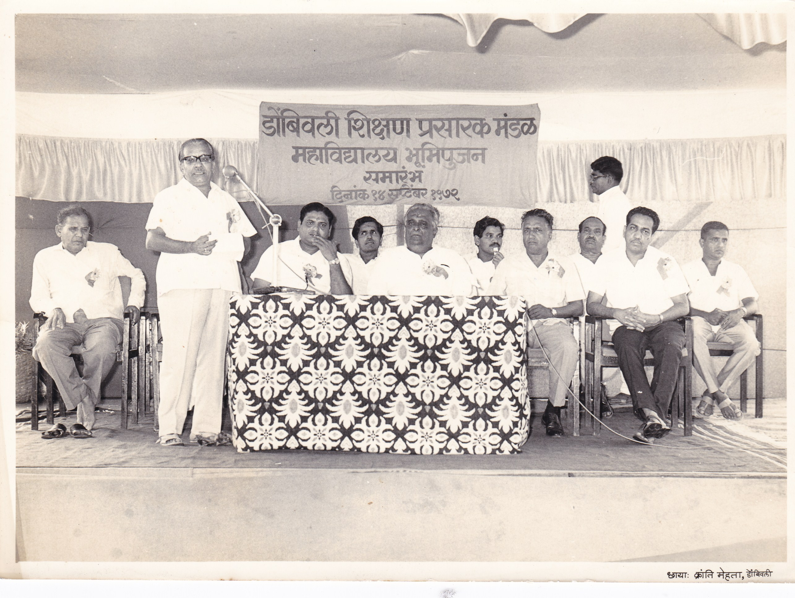

In 1970s, three friends Shri Prabhakar Desai (an agriculturist and a building contractor), Dr. U. Prabhakar Rao (First M.S Doctor in Dombivli who started Shrinivas Hospital in Dombivli with facilities for surgical, gynaecology, Orthopedics, etc.) and Dr. V. S. Upasni (general practitioner who set up Nityananda Nursing Home in Dombivli West), decided to set up a state-of-the-art educational institutions for school as well as higher education in Dombivli using their personal wealth and resources. The idea to set up the institution was triggered by a tragic accident witnessed by these three friends. “We were travelling by train to Mumbai when we saw a youngster falling from the moving train. Though we admitted the youngster in Nair hospital, Mumbai, he succumbed to his injuries after two days,” says Shri Prabhakar Desai, Chairman of Dombivli Shikshan Prasarak Mandal. The incident had a profound effect on the minds of these three friends. They felt that a young life was lost due to the unavailability of good educational institute for higher education in Dombivli. Thus, began the journey of illustrious Dombivli Shikshan Prasarak Mandal.


It was a dream and passion of Dr. Prashanth Rao and Dr. Upasni who brought together a few more like-minded people. Thus, fourteen elite citizens came together to establish Dombivli Shikshan Prasarak Mandal in 1972. Mandal’s first office was started at Shri. Desai’s residence at Narayan Krupa in Dombivli East. The founder members all shared a dream and the dream was not only to set up an ideal educational institution but also to create an academic environment to nurture young minds academically, athletically, culturally, socially and morally who will be ready for the challenges of the world.
Today, the Mandal runs three reputed educational institutes in Dombivli – K.V. Pendharkar College of Arts, Science, and Commerce, Sister Nivedita English School and Prabhakar Desai International School as well as Vanita Acharya’s Mother Touch Day Care & Activity Centre (established in 2016), Gun for Glory Shooting Academy (established in 2015), Yuva Multi Sports Complex (about 4000 sq ft, located at Plot No. OS 8/5/1, Dombivli East) and Multi Gym (established in 2014).